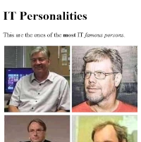
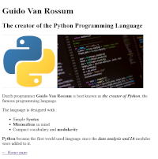
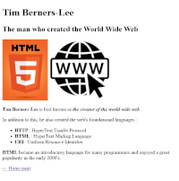
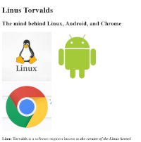

Examen TP - Absents
Présentation
Le site reprend quatre des principales célébrités du monde de l'IT :
- index.html, « Home page » du site.
- anders-hejlsberg.html, qui présente l'auteur du langage JavaScript.
- guido-van-rossum.html, qui présente l'auteur du langage Python.
- tim-berners-lee.html, qui présente l'auteur du World Wide Web.
- linus-torvalds.html, qui présente l'auteur du Linux.
Cliquer sur les miniatures pour agrandir les captures des pages du site.
|  index.html |
 anders-hejlsberg.html |
 guido-van-rossum.html |
|---|---|---|
|  tim-berners-lee.html |
 linus-torvalds.html |
Travail demandé
- Télécharger les images du site à partir de ce lien : Fichiers TP
- Décompresser le fichier dans votre dossier de travail.
- Créer le code HTML de deux pages uniquement.
- Envoyer votre travail à la fin de l'épreuve.